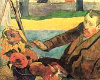

Reconnaissance
La veuve de Théo, Johanna Bonger, détient le rôle principal dans le processus de la valorisation de
l'œuvre de Van Gogh. L'héritage de ce dernier lui est confié en 1891, après le décès de son épouxVK 1.
Cependant, il ne faut pas oublier que Van Gogh était connu et apprécié de son vivant26. Il est connu que
Van Gogh a vendu une toile, mais rien ne prouve qu'il n'en ait pas vendu d'autres. D'ailleurs, il confie
cette charge à son frère, marchand d'art reconnu de l'époque et il échange plusieurs tableaux avec ses
amisVK 3. Théo, qui n'a survécu que peu de temps à Vincent, organise une exposition de ses toiles dans
son appartement, annoncée dans le Mercure de France en septembre 1890VK 4. Par la suite, Johanna réussit
à transformer cette collection d'art méconnue en une collection de grande valeur.
Paul Gauguin, Vincent van Gogh peignant les tournesols, 1888, Amsterdam, musée Van Gogh, Fondation
Vincent van Gogh.
Pour surmonter ces moments difficiles, Johanna déménage en Hollande où elle retrouve le soutien de sa
famille. Dès février 1891, elle fait venir chez elle une grande partie des tableaux restants de Van Gogh
depuis Paris. Elle fait assurer les 200 tableaux et les dessins pour une valeur de 2 600 florins. Elle
commence ainsi à montrer et à placer des tableaux aux Pays-Bas, puis à lire et à classer les lettres de
Vincent. Elle récupère aussi les lettres qu'Albert Aurier possédait. En effet, Theo lui avait envoyé
quelques lettres afin d'en faire publier des extraits. Cette même année, Émile Bernard publie dans le
Mercure de France les lettres que Vincent lui a envoyées. En 1914, Johanna parvient à publier les
lettres de Van Gogh après avoir rédigé une introductionVK 5.
D'un autre côté, à Paris, le père Tanguy vend 13 peintures et un dessin. C'est le début d'un succès
commercial qui se prolongera jusqu'à nos joursVK 6. À la fin du xixe siècle, afin de faire connaître Van
Gogh, Johanna organise des expositions : une à La Haye, une à Rotterdam, trois à Amsterdam et une
nouvelle à La Haye. Au début du xxe siècle, une vingtaine d'expositions honorent déjà l'œuvre de Van
Gogh aux Pays-Bas. À Paris, le Salon des indépendants de 1901 a également un impact important sur la
reconnaissance de Van Gogh grâce aux demandes provenant de nouveaux collectionneurs, comme Ivan Morozov
et Sergueï Chtchoukine, et les travaux entrepris par la critique Jacob Baart de la Faille, tel son
catalogue raisonné publié en 1928100. L'un des premiers acheteurs de toiles de van Gogh est Edgar
Degas101. 
Les contacts que Johanna tisse avec des personnes influentes de son époque l'aident à s'imposer et à
mieux faire connaître son beau-frère. Paul Cassirer est le premier à exposer et à vendre les œuvres de
Van Gogh. Il en vend au moins 55, entre 1902 et 1911, d'une valeur totale de 50 000 florins. Ambroise
Vollard organise aussi deux expositions dans sa galerie en 1895 et en 1896. Julien Leclercq rassemble 65
tableaux et 6 dessins pour une exposition en 1901 à la galerie Bernheim-JeuneVK 7. La valeur des œuvres
de Van Gogh commence à augmenter considérablement. Johanna Bonger arrive à placer plus de 70 tableaux et
une trentaine de dessins au Stedelijk Museum Amsterdam. En même temps, elle reçoit les amateurs chez
elle pour leur montrer les tableaux qu'elle possède. L'énergie mise pour la reconnaissance de ces œuvres
est finalement récompensée par une grande valeur marchande. La reconnaissance du travail effectué par
Van Gogh se concrétise par l'acquisition d'une nature morte de tournesols, en 1924, par la National
Gallery de Londres, au prix de 15 000 florinsVK 8. La femme de Theo est la principale ambassadrice de ce
phénomène jusqu'à sa mort en 1925. À partir de cette date, la valeur de ses œuvres ne cesse d'augmenter.
Par exemple en 1930, l'exposition du Museum of Modern Art de New York reçoit 120 000 personnes48.
En Allemagne, entre 1927 et 1931, Otto Wacker a vendu plusieurs dizaines de faux tableaux de Van Gogh,
au moment où le peintre commençait d'être connu102.
Renommée
Les réflexions sur Van Gogh divergent selon le point de vue choisi. Par exemple, Salvador Dalí
s'exprime ainsi en 1972 sur ce peintre qu'il n'aime pas103 : « Van Gogh est la honte de la peinture
française et de la peinture universelle… » Pour certains, sa vie, digne d’un héros romantique, en fait
un mythe, celui du peintre incompris ou de l'artiste maudit61. Il est pauvre, dépressif, asocial, au
tempérament de feu, etc. Pour d'autres, Van Gogh est un artiste complexe, intelligent et cultivé. Sa
peinture est le « fruit d'un travail long, méticuleux, acharné et référencéVK 9 ». Quel que soit le
point de vue choisi, Van Gogh est un peintre reconnu et admiré. Dans sa dernière lettre, trouvée dans sa
poche le jour de son suicide, il écritNote 4,Lettre 28 : « Eh bien vraiment nous ne pouvons faire parler
que nos tableaux. »
Pour les historiens de l’art, Van Gogh est un précurseur qui a ouvert à la peinture de nouvelles voies.
Par exemple, Derain et Vlaminck sont directement rattachés à l'art de Van Gogh, « par l'emploi de
couleurs pures en larges touches104 ». Pour les amateurs d'art, il reste un maître à l’égal de Léonard
de Vinci ou de Rembrandt avec une production très importante et une trajectoire artistique fulgurante en
durée et par ses styles. Pour le grand public, son œuvre est aujourd'hui accessible dans les plus grands
muséesNote 13.